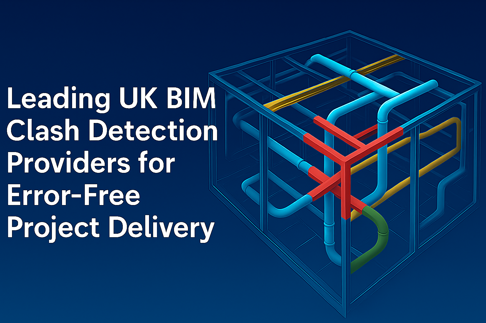

Leading UK BIM Clash Detection Providers for Error-Free Project Delivery
The construction world has changed drastically in recent years. Gone are the days when blueprints and heaps of paper marked the backbone of big infrastructure projects. Today, digital workflows dominate, led by technological advances like Building Information Modelling (BIM). In the UK, this digital transformation is not just a trend; it's a necessity. The stakes are high: every error or miscommunication can mean huge costs, unwanted delays, and headaches for everyone involved.
Imagine delivering a large hospital or a complex train station. Multiple teams work on the design, engineering, and construction, usually at the same time. BIM helps bring all this information together, ensuring that everyone's on the same page. One standout feature that guarantees error-free project delivery is BIM clash detection. Let's explore what this process is, why it matters, and how top UK providers like Arup, AECOM, Jacobs Engineering Group, Tesla Outsourcing Services, and WSP USA are making a difference.
What is BIM Clash Detection and Why is it Critical?
At its core, BIM clash detection is about catching problems before they happen in the construction process. Think of it like a spellchecker for building models, it scans digital plans for any potential conflicts or "clashes," such as two pipes trying to pass through the same spot or a wall that collides with an air duct.
Clashes commonly break down into:
- Brutal Clashes: Physical overlaps, things taking up the same space (e.g., a pipe running through a beam).
- Soft Clashes: Clearance or buffer issues, such as maintenance space not being left around HVAC units.
- Workflow/4D Clashes: Problems with scheduling, for example, two teams expected to work in the same place at the same time, or installation sequences that won't work.
Why is this so important? Because catching these mistakes early saves time, money, and frustration. It's much easier and far less expensive to resolve an issue on a computer than to try to fix it on a building site halfway through construction.
Here's why BIM clash detection is now seen as critical in the UK construction sector:
- Substantial cost savings by preventing tear-downs and rebuilds.
- Shorter project timelines due to better planning.
- Improved safety for site workers.
- Fewer reworks and change orders.
- Better communication between teams and stakeholders.
Plus, the UK government has made BIM a requirement on many public projects, using standards like BIM Level 2 compliance to drive digital best practices. Clash detection is a big part of meeting this high bar.
Criteria for Selecting a Leading BIM Clash Detection Provider in the UK
With so much at stake, picking the right clash detection partner is essential. Here are the top criteria to look for:
UK Experience and Portfolio:
Choose providers with a strong presence and proven track record on major UK projects. A company with hands-on knowledge of local codes, challenges, and stakeholders will naturally deliver better results.
Advanced Technology & Software:
The best firms use industry-standard tools like Autodesk Navisworks, Revit, and other cutting-edge BIM software for in-depth clash checks and smooth coordination.
Skilled and Certified BIM Professionals:
Look for a team that brings together engineers, architects, and BIM specialists with recognized qualifications and certifications.
Delivery Record:
Timeliness and cost-effectiveness matter. Review their track record for completing projects on schedule and within budget.
Transparent, Collaborative Reporting:
A great provider gives you clear, actionable reports and invites you into the process. Collaboration should be at the heart of every engagement.
Top 5 UK BIM Clash Detection Providers Provider
1. Arup

Arup is a globally respected firm of designers, engineers, and consultants, with a strong legacy in delivering innovative solutions for complex building and infrastructure projects throughout the UK and around the world.
BIM Clash Detection Strengths:
- Deep expertise in integrating and managing large digital models across multidisciplinary teams.
- Dedicated to meeting BIM Level 2 and other advanced industry standards.
- Experience in coordinating and delivering iconic UK projects where clash detection is mission-critical.
- Commitment to sustainability and resilient digital design processes.
Sample Project:
Arup's involvement in the design of the HS2 Interchange Station highlights their ability to deliver a complex, sustainable transport hub, with their work contributing to design coordination and strategic planning for this part of the UK's largest infrastructure project.
2. AECOM
AECOM is a leading global infrastructure consulting firm, thoroughly engaged in major UK sectors like transport, buildings, water, and energy.
BIM Clash Detection Strengths:
- Uses advanced virtual construction and coordination tools to manage project complexity.
- Systematic workflows for identifying and resolving clashes are documented across diverse project portfolios.
- Experience with large, technically challenging projects such as Crossrail and the Thames Tideway Tunnel.
- Focus on continuously improving technology adoption and team training.
Useful Fact:
AECOM routinely manages projects with intricate stakeholder requirements, leveraging robust clash detection to streamline collaborations and outcomes.
3. Jacobs Engineering Group

Jacobs is an engineering powerhouse with significant experience in UK infrastructure, defence, and public sector developments.
BIM Clash Detection Strengths:
- Integrates technical specialists and BIM coordinators for comprehensive clash management.
- Focused on risk reduction and adherence to rigorous review protocols at every stage.
- Early adopter of 4D and 5D BIM (integrating schedules and costs) for proactive clash detection and resolution.
- Noted for practical problem-solving that anticipates site conflicts long before construction begins.
UK Example:
Jacobs played a vital role in Network Rail's digital asset management, using advanced clash detection to improve project planning and minimize operational disruptions.
4. Tesla Outsourcing Services

Tesla Outsourcing Services is a multidisciplinary BIM and CAD services firm, working with clients in the UK and abroad to improve design and construction efficiency.
BIM Clash Detection Strengths:
- They offer in-depth clash detection as part of their wide BIM coordination services.
- Utilises industry-leading technology such as Autodesk Navisworks and Revit for high-precision clash reports.
- Skilled at supporting architects, engineers, and contractors in identifying and resolving design conflicts before they escalate.
- Experience across a diverse range of building types and project scales.
Highlight:
Tesla Outsourcing Services is known for detailed clash analysis, consistent communication, and delivering actionable insights that support smooth, error-free project execution.
5. WSP USA

WSP is a global engineering and professional services firm with a strong UK footprint, involved in major public and private sector projects that depend on seamless construction coordination.
BIM Clash Detection Strengths:
- Prioritises collaborative BIM processes, bringing together architects, engineers, and construction teams.
- Employs state-of-the-art digital platforms to identify, track, and resolve model clashes efficiently.
- Produces clear, visually intuitive reports that help stakeholders quickly understand and address issues.
- Renowned for supporting high-profile, complex projects with robust clash detection and BIM expertise.
Example Project:
WSP contributed to the Manchester Metrolink expansion, providing model coordination and clash detection that helped the project meet stringent timelines and avoid costly errors.
How to Evaluate and Engage the Right BIM Clash Detection Partner
Selecting a clash detection provider isn't just about technical capability. Here's a checklist to help guide the decision:
Key Questions:
- What experience do you have with similar UK projects?
- What software and digital tools do you use for clash detection?
- Can you demonstrate past results or provide references?
- How will you involve our team in the detection and resolution process?
- What is your approach to reporting and change management?
Additional Tips:
- Make sure the partner's expertise matches your project type (infrastructure vs commercial, new build vs refurbishment, etc.).
- Ask for sample reports or a walk-through of their BIM coordination process.
- Prioritise transparency and collaborative problem-solving over flashy presentations.
The Future of BIM Clash Detection in the UK
The landscape is constantly evolving. Looking ahead:
- Automation & AI: Newer software tools can automatically detect, group, and even propose resolutions for clashes, speeding up review processes.
- Enhanced Collaboration: Cloud-based platforms mean teams can simultaneously interact with models and clash reports in real time, even from different locations.
- Mandates & Standards: With the UK government requiring BIM on public projects and private clients following suit, digital coordination will only grow in importance.
- Data Integration: Combining BIM with project management systems, asset tracking, and even VR/AR to bring the digital and physical worlds closer together.
Conclusion
Error-free project delivery is not luck, it's the result of meticulous planning, coordination, and a keen digital eye for detail. BIM clash detection is the silent hero behind many of the UK's most successful and complex construction projects.